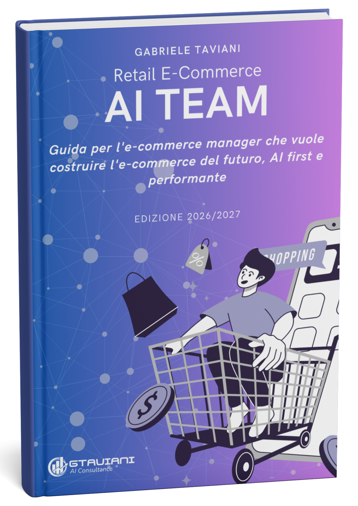

Guida per l'e-commerce manager che vuole costruire l'e-commerce del futuro, AI first e performante.
Il boom dell'e-commerce è finito. Il mercato cresce del 6%, ma nel 2026 in Italia sono uscite più imprese di quante ne siano entrate. Il sito è diventato un punto vendita come gli altri e il budget è passato da «investimento» a «costo di gestione».
Questa guida propone all'e-commerce manager un modello operativo diverso: un AI Team di e-commerce, con un organigramma, tre direzioni e agenti legati ciascuno a un KPI. Gli agenti lavorano 24 ore su 24 e ogni mattina ti consegnano il report. Tu decidi le priorità, il team esegue, tu approvi.
Non è un libro da leggere una volta: è una guida operativa, schematica, da consultare a ogni passo del cambiamento. 49 pagine A4, 13 capitoli con la stessa struttura: la tesi in una frase, i numeri con fonte, tabelle e schemi, le azioni da fare, l'argomento da portare al CFO. Dentro trovi grafici, una checklist di autovalutazione, schede di audit da compilare e spazi per gli appunti.
Stampala. È impaginata in A4 per stare sulla tua scrivania: le tabelle hanno caselle da crociare e righe da compilare, e ogni capitolo si chiude con uno spazio per appunti e note.
Seguila passo per passo. Ogni capitolo termina con «Cosa fare»: poche azioni concrete da spuntare prima di passare al successivo. Comincia dalla checklist del capitolo 3 con il tuo team, scrivi la tua baseline nel capitolo 9 e porta le schede del capitolo 13 all'audit.
49 pagine A4, 13 capitoli, PDF gratuito.
Un E-Commerce AI Team è un reparto di agenti AI organizzato come un organigramma aziendale. Al vertice c'è un chief, l'iCEC, che coordina tre direzioni: tecnica (iCTO), marketing (iCMO) e analytics (iCFO). Ogni agente operativo è legato a un KPI e lavora 24 ore su 24. L'e-commerce manager decide le priorità e approva le azioni sopra soglia. Il modello è descritto nella guida «Retail E-Commerce AI Team» di Gabriele Taviani, GTAVIANI Consulting.
Secondo il confronto della guida «Retail E-Commerce AI Team» di GTAVIANI Consulting, un AI Team completo costa il 40–70% in meno di cinque risorse umane equivalenti, consumi AI inclusi. Le cinque risorse sono specialist sito/SEO, content creator, social media manager, performance marketer e CRM specialist, con un costo aziendale di circa 191.000€ l'anno. I piani partono da 1.268€ al mese, con ore di consulenza e crediti inclusi.
Di notte gli agenti allineano i dati di ordini, magazzino e CRM, calcolano i KPI del giorno prima e preparano le proposte di budget. Alle 8:00 l'e-commerce manager riceve un report con KPI, azioni già eseguite, azioni in attesa di approvazione e alert. In circa 20 minuti approva. Durante il giorno gli agenti aggiornano schede prodotto, contenuti, campagne e workflow, e rispondono ai clienti entro il minuto.
Un chatbot risponde a una domanda una sola volta e, se manca un dato, tende a inventarlo. Un agente AI riceve un obiettivo con condizioni di soddisfazione misurabili e usa strumenti come gestionale, CRM e piattaforme ads. Lavora in un ciclo (osserva, ragiona, agisce, valuta) finché il risultato non è verificato, e se non può proseguire si ferma e chiede a una persona. Nel metodo GTAVIANI questo ciclo è regolato dal protocollo AWA CAWP.
Si parte da un audit: baseline dei KPI, mappatura delle ore del team spese in attività di routine (in media il 60–70%), sistemi e dati disponibili. Poi si scelgono due o tre processi ad alto ritorno e basso rischio, si definiscono le condizioni di soddisfazione e si attivano i primi agenti. Per mettere a regime un AI Team completo servono in genere 45–60 giorni. GTAVIANI Consulting offre il primo audit gratuito.